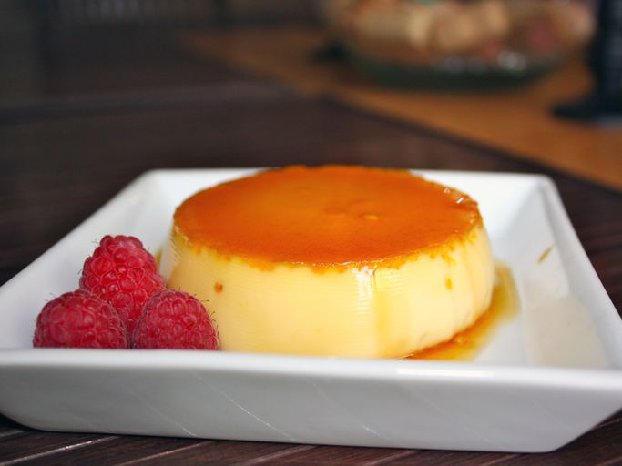

Flan

A sweet, baked custard dessert made of milk, eggs, and sugar, topped with a layer of clear caramel sauce.
Prep Time: 10 mins
Cook Time: 1 hr
Total Time: 1 hr 10 mins
Servings: 4
Ingredients
- ½ cup white sugar
- 2 cups milk
- 2 eggs, beaten
- 2 egg yolks, beaten
- ⅜ cup white sugar
Directions
- Preheat oven to 350 degrees F (175 degrees C).
- Melt 1/2 cup sugar in a heavy bottomed saucepan over medium heat until golden.
Carefully pour hot sugar evenly into four 7- to 9-ounce oven-proof ramekins or custard cups,
tilting cups to coat bottoms evenly.
- Bring milk just to boiling over medium heat in a separate saucepan. Stir hot milk,
a little at a time, into beaten eggs and egg yolks, until well combined. Stir in sugar.
Pour milk mixture evenly into ramekins.
- Line a roasting pan with a damp kitchen towel. Place ramekins on towel, inside roasting pan,
and place roasting pan on oven rack. Fill roasting pan with boiling water to reach halfway up
the sides of the ramekins.
- Bake in preheated oven 40 minutes, until set. Let cool, invert and serve.
- Enjoy!
Home